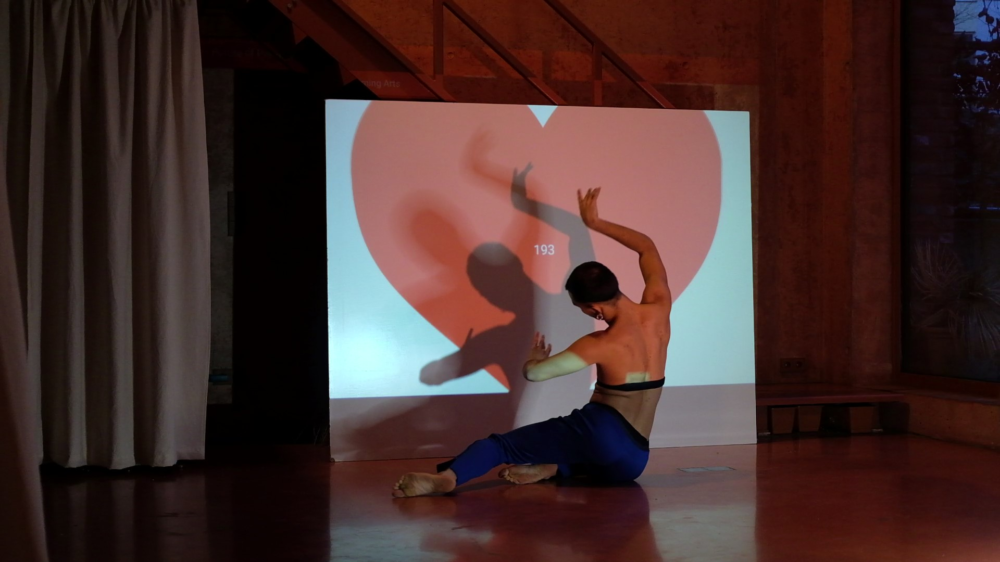

an XR performance installation using an interaction concept based on the heart rate of a dancer
Project Overview
The XR performance installation "HeartBeats" is the result of a research project by TU Berlin and Empiria Theatre Zagreb. The goal of the research was the development of an interaction concept using XR to create experiences for an artistic performance.
The core inspiration behind this XR installation was the trend of using data to re-create. We wanted to explore working with "unconventional" data that have been so far explored less in the context of performing arts. Bio-signals such as heart rate, EEG, EMG have a promising quality that can allow performers a brand-new spectrum of possibilities for artmaking. For this project, we decided to work with the heart rate element to create a performance.
My contributions
As my area of expertise lies in Android Development, I worked on the HR Simulator as well as the Android version of the AR Particle Flowfield. As a dancer, I also took over the performance and choreography side (one could say "the frontend development" of the performance).
Other team members: Elisabeth Oswald (TU Berlin), Anna Petrouffa (TU Berlin), Rhea Widmer (TU Berlin), Lorenzo Cocchia (Politecnico di Milano)
Concept
The installation consists of the following elements:
- A dancer that wears a high accuracy heart rate sensor (Polar H10) on their chest
- The application EKG Sound Generator developed in Android Studio connects to the sensor using Bluetooth protocols and generates sounds and visuals in relation to the heart rate data of the dancer
- The audience watches the scene with the AR application Noise Flowfield developed in Unity 3D that creates a 3D audio visualization - the particles in the AR scene react to the sounds in the environment.
Using these elements an interaction storyline was developed where: the dancer moves, their heart rate changes -> sound is generated -> AR particles react to the sounds

Behind the scenes: Technicalities
EKG Sound Generator: Using the Polar BLE SDK, an Android application was developed in Android Studio.
Once the app connects via Bluetooth to the Polar H10 heart rate sensor, the heart rate can be seen on the screen. The sound generation starts once the heart rate reaches 100.
We used 18 different audios with different bpm's (beats per minute) and as the heart rate increases, the corresponding sound is generated.
For an additional visual experience, we also created a heart animation that grows in size in relation to the heart rate.
Noise Flowfield: Extracting the microphone input, the amplitude of the signal is used to compute the speed and the rotation of the particles by linear interpolation. Additionally, the spectrum is divided into 8 bands that are used to determine the color and size of the particles. - Developed in Unity3D.
Prototyping
Initially, our idea was to use the Oculus VR headset an AR device. Integrating the Oculus Passthorugh API, we could use the camera input of the Oculus, to which we added our Noise Flowfied.
However, for security and data privacy reasons, Oculus Quest does not allow to record applications with Passthrough API, meaning the AR experience of the performance using Oculus could not be recorded nor documented.
Due to unsuitability of Oculus Quest for the context of an AR performance, we stopped working on the prototype on Oculus Quest and decided to develop a version of the app for Android mobile devices .
Exploring the heart rate
The challange behind this was the fact that the heart rate is highly influenced by the person's emotional state. For example, the heart rate range that I used while developing at home was in no way close to the heart rate range I had when rehearsing with other people around - meaning "the nervosity of the performer" needed to be taken into account when creating the choreography.

Choreographic Research
My artistic interests as a dancer are highly inspired by Merce Cunningham and his enthusiasm about randomization in his dance pieces. Using this interaction concept, I explored a new way of creating a choreography. Over the course of the choreographic research, it seemed that one cannot "choregraph" their heart rate nor "fake" it. So, I took this idea of unpredictability and realness of the heart to create a choreography concept where the heart controls the whole performance, including the performer. Bringing together all these interactive elements, the flow of the performance was determined randomly by the state of the heart.
Outlook
One of the challanges about this project was the fact that this was primarily a project of the technical university
and therefore had an obvious emphasis on the research questions regarding the technological side.
We were invited to develop a technically advanced product, while also keeping an artistic perspective on what we do. As much as I am proud of what we came up with, both technically and performance-wise, I do want to explore the potential of the technologies used in this installation more critically.
As Steve Dixon put it in his book "Digital Performance, A History of New Mediain Theather, Dance, Performance Art, and Installation":
Digital performance is by definition an additive process, where new technology is added to performance.
The questions of "how" this addition (or "augmentation") works and "what" it exactly adds, really interest me. I believe that digital technologies and interactive media have the power to challenge the traditional notions of the artwork, audience, and artist.
Furthermore, in dance and movement practice, one has a profound connection to the body. Therefore, I find that the use of bio-signals in and for a dance performance has a lot of choreographic material to be explored.